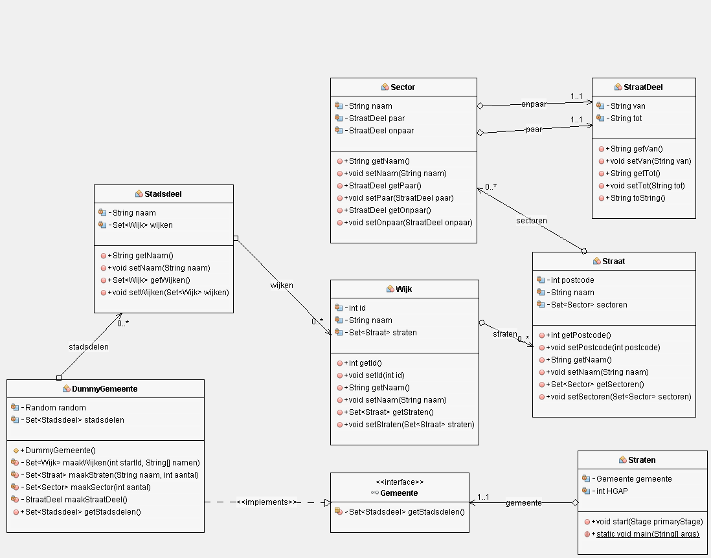
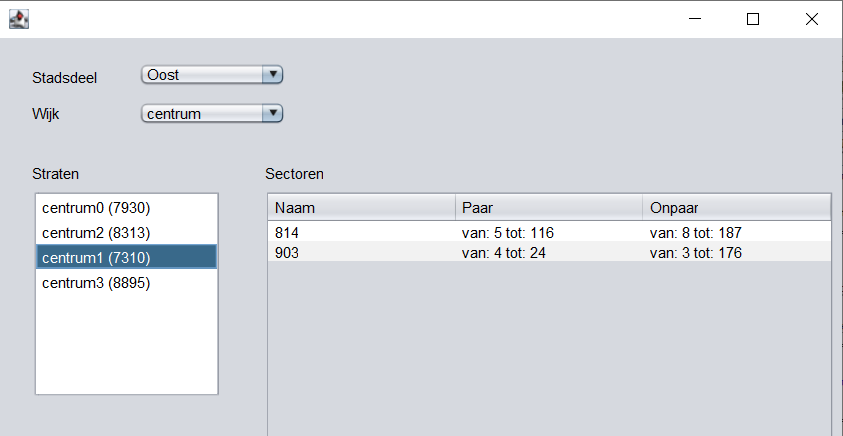
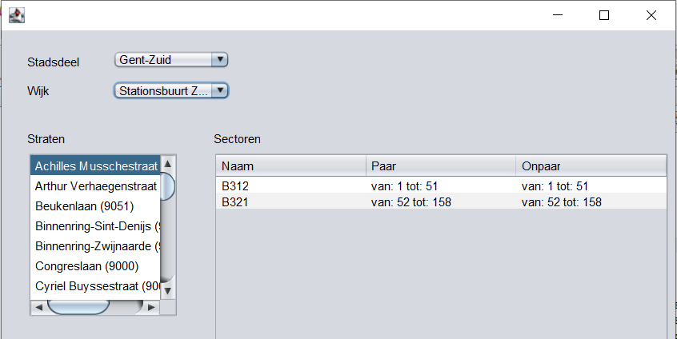
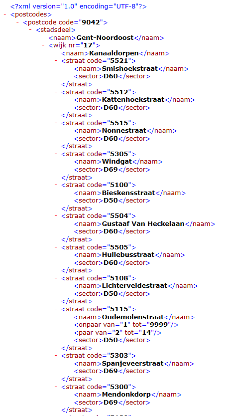

In dit labo wordt een XML-bestand op verschillende manieren gebruikt en verwerkt. In opdracht 0 gebruiken we een klein XML-bestand; voor de eigenlijke opdrachten gebruiken we een bestand waarin alle straten van Stad Gent staan: stratenInGent.xml.
Gegeven het project DOM_boom_uitschrijven. De klasse Boom implementeert een zeer eenvoudige boomstructuur: elke knoop (of element) heeft een waarde en een aantal (of geen) kinderen. De toString-methode gebruikt een recursieve hulpfunctie om de boom leesbaar uit te schrijven. Bestudeer de code (let op de extra parameter niveau), laat het hoofdprogramma Main lopen, en kijk na of je de structuur van de boom begrijpt.
Gebruik nu dit principe om de klasse DOMBoom uit te werken. Een object van deze klasse leest bij constructie een XML-bestand in en parset dit naar een Document-object. De toString-methode geeft nadien een leesbare weergave van de Document-structuur. Van elk element uit de structuur wordt minimaal de naam en de waarde uitgeschreven (zorg dat het duidelijk is wat de naam en wat de waarde is). Let op:
resultaat += "*" + str + "*";om de variabele str uit te schrijven.
De GUI is reeds geschreven en heeft voorlopig een dummyobject als datalaag. Om de structuur van dit object (en de gebruikte klassen) sneller te doorgronden, gebruik je onderstaand UML-diagram.

Vervang het dummyobject door een object dat zijn gegevens uit het XML-bestand stratenInGent.xml haalt.
De klasse van dit object is reeds deels geschreven: XMLGemeente.
Bestudeer de code die reeds gegeven is; je zal iets gelijkaardigs nodig hebben in opdracht 2 van dit labo.
Vul nu aan waar gevraagd: gebruik het DOM-principe om het XML-bestand volledig in te lezen.

Je merkt dat de stadsdelen, wijken en straten niet alfabetisch gesorteerd zijn. Hoe zou je dat kunnen oplossen?
Schrijf nu een programma dat het XML-bestand stratenInGent.xml inleest. Baseer je op de vorige opdracht waar nuttig. Daarna maakt dit programma een nieuw DOM-object aan voor het nieuwe XML-bestand, dat dan met behulp van de Transform-API weggeschreven wordt naar een nieuwe bestand dat voldoet aan het opgegeven XML schema. Het resultaat (of toch de start daarvan) vind je hieronder.
Controleer of je resultaat voldoet aan het opgegeven XML schema. 